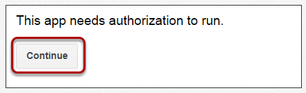
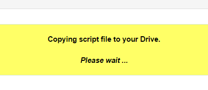
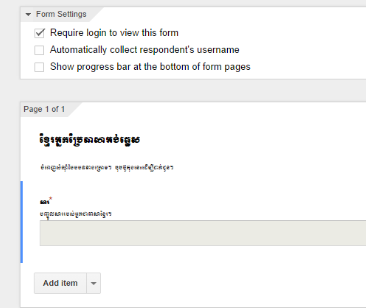
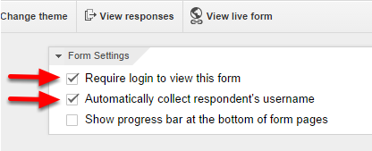

TSTranslateKhmer is a demonstration Google Apps Script which translates Camodian Khmer to English through a Google Form using Google Translate. An email is sent to the form owner containing the Khmer text along with the English translation.
STEP 2: Click TSScriptCopy to access. Wait for the application to load...
(If you have not run TSScriptCopy before, you will be prompted to perform a one-time authorization to allow the application to copy scripts and host documents to your Google Drive.)

Step 3: When the TSScriptCopy page displays in your browser, locate the TSTranslateKhmer Copy to Drive button and click to install
Step 4: Wait for TSScriptCopy to copy the TSTranslateKhmer script and host form to your Google Drive. The copy process may take a minute to run...

Step 5: Access and open the TSTranslateKhmer host form by clicking the link in the resulting notification message.
(Click the Close link to close the notification...or exist TSScriptCopy by closing the associated browser window.)
Step 5: To use the script, see the Getting Started section below.
Get started with TSTranslateKhmer in four easy steps:
Step 1: Create the Form
Locate (and open) the Google Form created during Install.
Find the TSTranslateKhmer menu option in the form toolbar.
Select the TSTranslateKhmer > Create Form menu option.
(If you have not run TSTranslateKhmer before, you will be prompted to perform a one-time authorization to allow the script access. Follow the prompts and click Continue and Accept to authorize.)
Once the form has been created a notification message will show. Click OK to dismiss the message.
Modify the form theme, title, description, paragraph text element title and help text as needed. See the documentation for more information.
NOTE: TSTranslateKhmer was designed to work with only one form paragraph text element. No other elements will be translated.
Step 2: Enable TSTranslateKhmer
Select the TSTranslateKhmer > Enable Submit Trigger menu option.
Once the script trigger is enabled a notification message will show. Click OK to dismiss the message.
Step 3: Translate Form Text to Khmer
Select the TSTranslateKhmer > Utilities > Translate Form Text to Khmer menu option.
This will translate the form text into Khmer.

NOTE: Some built-in Google Form text will not be translated by TSTranslateKhmer.
Once the form text has been translated a notification message will show. Click OK to dismiss the message.
NOTE: If the form users are using a browser such as Chrome which will automatically translate the live form when they view it, you can leave the form in English.
To translate the form back to English...
Select the TSTranslateKhmer > Utilities > Translate Form Text to English menu option.
NOTE: Using TSTranslateKhmer to translate Khmer form text back to English may alter the original English text.
Step 4: Publish Form
View the live form by clicking the View live form button on the form toolbar.
To publish the form, uncheck the Require login to view this form box at the top of the form and click OK on the following prompt.
If you want to keep the form accessible only within your Google Apps domain...leave the Require login to view this form checked.
If you want to keep the form accessible only within your Google Apps domain AND collect the respondent’s username...check the Automatically collect respondent’s username box. The form submission email will contain the respondent’s username in addition to the form submission content.

Important Notes About TSTranslateKhmer
The Khmer text portion of the email may only be viewable in certain browsers such as Chrome. Other desktop or mobile browsers may not display the Khmer text.
Google Apps Scripts are subject to daily quota limits including the number of emails sent. See the Quota Limits tab of the Google Apps Script Dashboard for more information.
TSTranslateKhmer may not be appropriate for high traffic forms, especially in cases where the form owner consistently receives quota limit exceeded notifications.